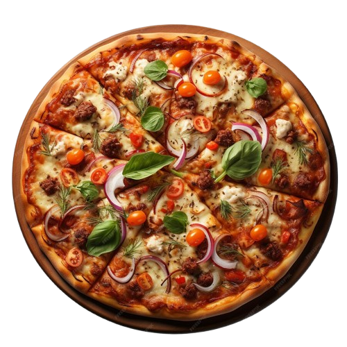
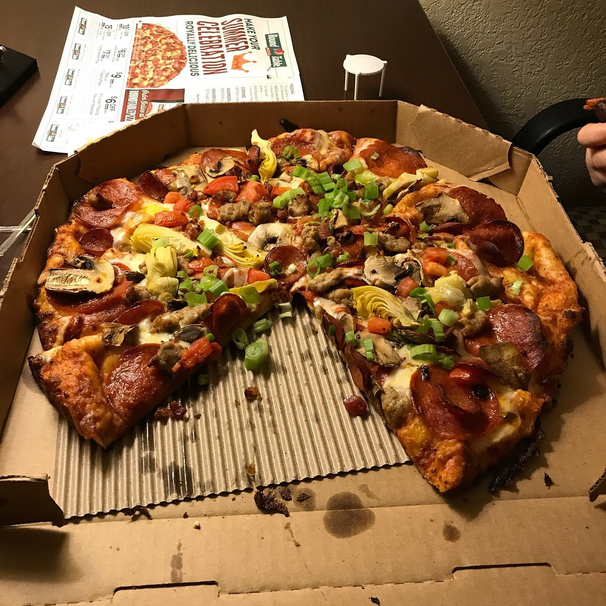

Pizza
Di Roma
From Italy With Love
FROM 10:00 PM EVERYDAY

Things you must know
about pizza.
Pizza is a classic Italian dish consisting of a flatbread
typically topped with tomato sauce, cheese, and
various toppings, such as meats, vegetables, and
bread crusts.It is traditionally eaten in the summer
months.

